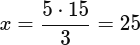
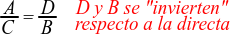
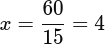
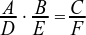
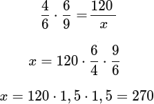
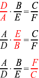
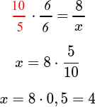
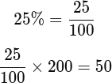

Magnitudes directamente proporcionales
Dos magnitudes son directamente proporcionales cuando, al aumentar una, la otra aumenta en la misma proporción, y cuando una disminuye, la otra también disminuye.
Esto significa que si multiplicamos una por un número, la otra también se multiplica por ese mismo número.
En este tipo de situaciones, la razón entre las dos magnitudes es siempre la misma.
Ejemplo:
Si 1 cuaderno cuesta 2 €, entonces:
- 2 cuadernos cuestan 4 €
- 3 cuadernos cuestan 6 €
- 5 cuadernos cuestan 10 €
El precio aumenta de forma proporcional al número de cuadernos, por lo que son magnitudes directamente proporcionales.
Magnitudes inversamente proporcionales
Dos magnitudes son inversamente proporcionales cuando, al aumentar una, la otra disminuye, y viceversa.
En este caso, el producto de ambas magnitudes se mantiene constante.
Es muy común en situaciones de reparto del trabajo o del tiempo.
Ejemplo:
Un trabajo se puede hacer en:
- 1 persona → 12 horas
- 2 personas → 6 horas
- 3 personas → 4 horas
Cuantas más personas trabajan, menos tiempo se tarda. Por eso, el número de personas y el tiempo son magnitudes inversamente proporcionales.
Repartos proporcionales
Un reparto proporcional consiste en dividir una cantidad total en partes que guardan una proporción determinada.
Cada persona o elemento recibe más o menos cantidad según el número que le corresponda en la proporción.
Ejemplo:
Tres amigos reparten 120 € en proporción 1 : 2 : 3.
Sumamos los números de la proporción:
1 + 2 + 3 = 6
Calculamos cuánto vale cada parte:
120 ÷ 6 = 20 €
Entonces:
- El primero recibe 20 €
- El segundo recibe 40 €
- El tercero recibe 60 €
En un reparto inversamente proporcional, las cantidades que se reparten van al revés de los números que indican la proporción.
Esto ocurre cuando quien tiene un número mayor recibe menos, y quien tiene un número menor recibe más.
Este tipo de reparto se utiliza cuando la cantidad que recibe cada persona depende de una magnitud que actúa de forma inversa, como el tiempo, el número de días o el esfuerzo.
Para resolverlos:
- Escribimos la proporción dada.
- Calculamos los inversos de esos números.
- Repartimos la cantidad total de forma proporcional a esos inversos.
Ejemplo:
Tres trabajadores realizan un mismo trabajo en distinto tiempo y se reparten 180 € de forma inversamente proporcional al tiempo empleado:
- Trabajador A: 2 días
- Trabajador B: 3 días
- Trabajador C: 6 días
Paso 1: Escribimos los inversos
1/2, 1/3, 1/6
Paso 2: Quitamos denominadores (multiplicamos por 6)
3 : 2 : 1
Paso 3: Repartimos proporcionalmente
Sumamos:
3+2+1=6
Cada parte vale:
180÷6=30
Reparto final:
- A recibe: 3⋅30=90€
- B recibe: 2⋅30=60€
- C recibe: 1⋅30=30€
Regla de tres simple directa
La regla de tres simple directa se utiliza cuando dos magnitudes son directamente proporcionales.
Esto significa que si una magnitud aumenta, la otra también aumenta, y si una disminuye, la otra también disminuye.
A ________ B
C ________ D
Donde:
A·D = C·B
O dicho de otro modo:
 Para aplicarla:
Para aplicarla:
- Colocamos los datos en forma de tabla.
- Multiplicamos en cruz.
- Dividimos para encontrar el valor que falta.
Ejemplo:
Si 3 entradas cuestan 15 €, ¿cuánto costarán 5 entradas?
Entradas Precio (€)
3 ____________ 15
5 ____________ x
Multiplicamos en cruz:
3·x = 5·15

Las 5 entradas costarán 25 €.
Regla de tres simple inversa
La regla de tres simple inversa se usa cuando las magnitudes son inversamente proporcionales.
En este caso, si una magnitud aumenta, la otra disminuye.
A ________ B
C ________ D
Donde:
A·B = C·D
O dicho de otro modo:
A diferencia de la directa, aquí no se multiplican en cruz, sino que se mantiene constante el producto de las magnitudes.
Ejemplo:
6 personas tardan 10 días en terminar un trabajo.
¿Cuántos días tardarán 15 personas?
Entradas Días
6 ________ 10
15 ________ x
Como es proporcionalidad inversa:
6⋅10 = 15⋅x
Con 15 personas se tardarán 4 días.
Regla de tres compuesta directa
La regla de tres compuesta directa se utiliza cuando una magnitud depende de más de una magnitud, y todas las relaciones son directas.
Es decir, si una de las magnitudes aumenta, el resultado final también aumenta.
A ________ B ________ C
D ________ E ________ F
Donde:

Se resuelve comparando cómo cambian las magnitudes y multiplicando los factores.
Ejemplo:
En una fábrica:
- 4 máquinas producen 120 piezas en 6 horas.
- ¿Cuántas piezas producirán 6 máquinas en 9 horas?
La regla de tres a aplicar es la regla de tres compuesta directa porque:
- Más máquinas → más piezas (directa)
- Más horas → más piezas (directa)
4 ________ 6 ________ 120
6 ________ 9 ________ x
Se producirán 270 piezas.
Regla de tres compuesta inversa
La regla de tres compuesta inversa se aplica cuando una magnitud depende de varias magnitudes y al menos una de ellas es inversamente proporcional al resultado.
Cuando una magnitud es inversa, se coloca cambiada (al revés) en la fracción.
A ________ B ________ C
D ________ E ________ F
Sucede de forma general con uno de los 3 siguientes posibles casos:

(O varias de las fracciones se invierten, pero nunca todas a la vez).
Ejemplo:
Para pintar un muro:
- 5 pintores tardan 8 días pintando 6 horas al día.
- ¿Cuántos días tardarán 10 pintores trabajando 6 horas al día?
Es regla de tres compuesta inversa porque:
- Más pintores → menos días (inversa)
- Las horas son las mismas → no influyen
5 ________ 6 ________ 8
10 ________ 6 ________ x

Tardarán 4 días.
Porcentajes
Un porcentaje representa una parte de un total que siempre se considera como 100.
El símbolo % significa “por cada 100”.
Se usan mucho en descuentos, notas, estadísticas o impuestos.
Ejemplo:
El 25 % de 200 alumnos significa:

Por tanto, el 25 % de 200 alumnos son 50 alumnos.
Aumentos y disminuciones porcentuales
Un aumento porcentual ocurre cuando una cantidad crece en un cierto porcentaje. Se calcula aplicando el porcentaje al valor inicial y luego sumando el porcentaje calculado.
Una disminución porcentual ocurre cuando una cantidad se reduce en un porcentaje determinado. Se calcula aplicando el porcentaje al valor inicial y luego restando el porcentaje calculado.
Ejemplo:
Un abrigo cuesta 80 € y tiene un descuento del 20 %.
Calculamos el 20 % de 80 €:
0'20 · 80 = 16
Restamos el descuento:
80 − 16 = 64
El precio final del abrigo es 64 €.
Otra forma de calcularlo es sabiendo que si aplicamos un descuento del 20% (0'20), realmente el precio final es el 100% - 20% = 80% (0'80) del precio original, y operar en consecuencia:
80 · 0'8 = 64 €
Los aumentos y disminuciones porcentuales se pueden encadenar, conforme se explica en el siguiente vídeo:
{kind=link}
{kind=link}
{kind=link}
{kind=link}
{kind=link}
{kind=link}